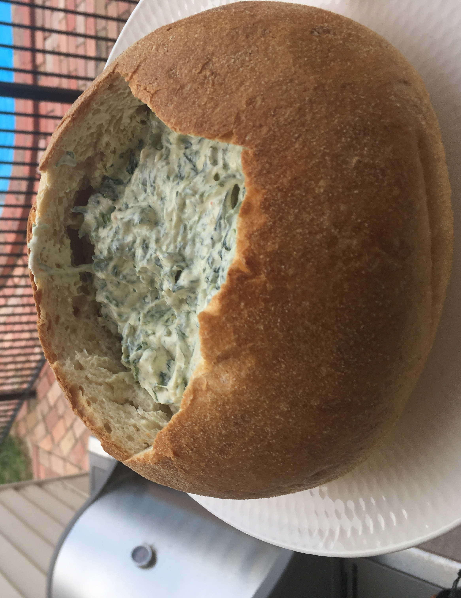

Spinach Dip

Description
My second favorite appetizer of all time. My Godmother's recipe is to die for!
Ingredients
- 1 (16-ounce) container sour cream
- ½ (10-ounce) package frozen chopped spinach, thawed and drained
- 1 (4-ounce) can water chestnuts, drained and chopped
- 1 (1.8-ounce) package dry vegetable soup mix
- 1 (1-pound) loaf round sourdough bread
Steps
- Gather all ingredients.
- Mix sour cream, mayonnaise, spinach, water chestnuts, and dry soup mix together
in a medium bowl. Chill in the refrigerator for 6 hours, or overnight.
- Cut off the top of the sourdough loaf and hollow out the center to make a sturdy
bread bowl. Tear removed bread into bite-sized pieces for dipping.
- Fill bread bowl with spinach mixture.